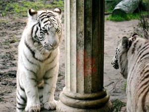

- HOME
- Algemeen
- Onderverdeling
- Uiterlijk
- Gedrag
- Zintuigen
- Ondersoorten:
- Siberische tijger
- Bengaalse tijger
- Sumatraanse tijger
- Indo-Chinese tijger
- Zuid-Chinese tijger
- Kaspische tijger
- Javaanse tijger
- Balinese tijger
- Hybriden:
- Lijger
- Teeuw
- Historisch:
- Sabeltandtijger
- Links


Relevante links:
- Territorium
Over het territorium van de tijger.
De voortplanting en
de opvoeding van de jongen
1. De voortplanting
2. De opvoeding van de welpen
De voortplanting
Tijgers paren het hele jaar door, maar ze hebben een vruchtbaarheidspiek in oktober-november en maart-mei.
Het bevruchtingsritueel van tijgers verschilt sterk van dat van mensen: wanneer het wijfje bronstig is, laat ze geursporen en andere kenmerken achter op de grenzen van haar territorium. Ze maakt ook gebruik van geluidssignalen, wat een beetje vergelijkbaar is met zangvogels (hoewel het daar enkel de mannetjes zijn die zingen).
Ook de mannetjes maken geluid, maar deze zijn luider, korter en van dieper uit de keel. Wanneer mannetjes de signalen opmerken, zullen ze het territorium van het wijfje binnendringen. Wanneer er geen mannetje op deze tekenen afkomt, zal het wijfje haar territorium in de steek laten en zelf naar een mannetje op zoek gaan.
Aangezien het territorium van mannetjes en vrouwtjes overlappen (het territorium van een mannetje overlapt vaak met dat van verschillende vrouwtjes), zal het vrouwtje meestal dit mannetje kiezen, totdat deze verdreven zou worden door een ander mannetje. Dit heeft ook als voordeel dat het mannetje in de buurt is om zijn jongen later te beschermen tegen andere langstrekkende mannetjes (wat al een enorme stressfactor voor de moeder elimineert).
Wanneer de tijgers elkaar gevonden hebben, ontmoeten ze elkaar meerdere keren per dag om te paren. Ze gebruiken de nacht om te gaan jagen en eten te zoeken. Wanneer er nog een tweede mannetje op de proppen komt, zullen ze elkaar proberen af te schrikken en als het niet lukt, te vechten, waarbij de sterkste overwint en mag blijven. Tijgers zijn overigens nooit homoseksueel, wat bij bv. antilopen wel eens het geval is.
Het opvoeden van de welpen
Wanneer het wijfje niet langer loops is, gaan ze elk terug naar hun eigen territorium. De eerste 2,5 weken is het niet zichtbaar of ze zwanger is. Pas de laatste 10 dagen wordt haar dikke buik duidelijk zichtbaar (ze moet immers zelf de hele tijd voor haar voedsel zorgen en daarvoor is dit zeer hinderlijk).
Na 103 dagen worden er 2 of 3 jongen geboren (gemiddeld 2,9 bij gewone en 2,75 bij witte tijgers). Ze worden geboren op een goed verstopte plaats zoals een overhangde rots, grotten en soms zelfs verlaten gebouwen. De jongen worden geboren met tussenpozen van 10 à 20 minuten. Bijgevolg duurt de bevalling slechts een uurtje. De moeder vult haar energie meestal terug aan door de vruchwaterzak, de placenta en de navelstreng terug op te eten. De volgende dag gaat ze terug op jacht.
Tijgers zijn over het algemeen (zeker in het begin) slechtere moeders dan leeuwen: bij de allereerste bevalling verwerpt de moeder haar jongen meestal en laat ze hen aan hun lot over; ze is te onervaren en weet niet goed wat ze voor haar jongen moet doen om ze te laten overleven. Na de 2de worp heeft ze al wat meer ervaring en gaat het al beter. Vanaf haar 3de worp is ze meestal een volleerde moeder. Ze wordt vanaf 18 tot 20 maanden na de bevruchting terug loops. Factoren zoals stress kunnen de bronsttijd vaak nog wat uitstellen.
De jongen beginnen snel met hun opvoeding: na 9 tot 30 minuten brullen de jongen voor het eerst. De jongen drinken in het begin enkel melk en na 40 dagen krijgen de jongen hun eerste stukjes vlees, maar ze blijven nog steeds veel melk drinken. Na 90 tot 100 dagen leven ze volwaardig op vlees. Ze hebben dan ongeveer 1 kilogram vlees per dag nodig. Hun totale leertijd bedraagt ongeveer 2 jaar. In die tijd leren ze de nodige vaardigheden van hun moeder om te jagen en leren ze al spelenderwijs tegen elkaar vechten. Deze vaardigheden zijn zeer belangrijk om later te kunnen overleven. Vaak zal één van de jongen dominanter zijn dan de anderen; dit jong zal als eerste het nest verlaten en heeft de grootste overlevingskansen.
Ondertussen verwisselen ze ook vaak van slaapplaats, waardoor de jongen het territorium van de moeder beter leren kennen en ze beter verborgen blijven voor anderen. De grootste gevaren voor de welpen zijn kleinere roofdieren en mannelijke tijgers die niet hun vader zijn. Deze laatste zullen de jongen zo snel mogelijk doden omdat de moeder sneller terug bronstig wordt wanneer er geen jongen in de buurt zijn. Hiervoor is de aanwezigheid van de vader in de buurt van de moeder zoals boven vermeld dus heel belangrijk; wanneer deze zich kan bezig houden met het verjagen van andere mannetjes in zijn territorium, neemt dit een deel van de stress voor de moeder weg (en kan deze ook niet verwond geraken).

Zolang de moeder jongen heeft, is ze ongelooflijk onvoorspelbaar en gevaarlijk (oa. vanwege de noodzaak haar jongen te verdedigen). Ze zal elk individu dat in de buurt komt van haar broedplaats zonder angst aanvallen en doden als het nodig is.